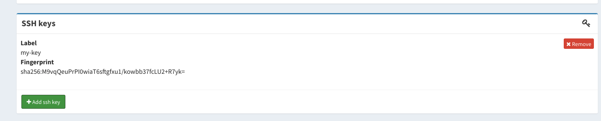

Managing SSH keys
Starting with version v1.7.0, IAM allows users to link SSH public keys to
their accounts.
SSH keys are then exposed to relying parties in two ways:
- through the IAM SCIM APIs;
- as a claim in the OpenID Connect
userinfoendpoint response, if the token has thessh-keysscope.
Managing account SSH keys
The IAM dashboard allows a user to link one or more SSH keys to their account, as shown below:

Accessing account SSH keys via SCIM APIs
As clarified in the SCIM APIs documentation, ssh keys are exposed in the user information returned to authorized clients, as in the following fragment:
{
"id": "80e5fb8d-b7c8-451a-89ba-346ae278a66f",
...
"userName": "test",
"urn:indigo-dc:scim:schemas:IndigoUser": {
"sshKeys": [
{
"display": "my-key",
"primary": true,
"value": "ssh-rsa AAAAB...",
"fingerprint": "M9vqQeuPrPI0wiaT6sftgfxu1/kowbb37fcLU2+R7yk=",
"created": "2021-08-25T15:18:45.978+02:00",
"lastModified": "2021-08-25T15:18:45.978+02:00"
}
],
}
}
Accessing account SSH keys via the userinfo endpoint
SSH keys linked to a user account are returned in the userinfo endpoint
response if the token used to access the endpoint has the ssh-keys scope, as
in the following example:
❯ curl -s -L -H "Authorization: Bearer ${AT}" https://iam.local.io/userinfo | jq .
{
"sub": "80e5fb8d-b7c8-451a-89ba-346ae278a66f",
"ssh_keys": [
{
"fingerprint": "M9vqQeuPrPI0wiaT6sftgfxu1/kowbb37fcLU2+R7yk=",
"value": "ssh-rsa AAAAB3NzaC1yc2E..."
}
]
}
Note that the ssh-keys scope is a restricted scope, i.e., it can be
assigned to client registered in IAM only by IAM administrators.
Last modified January 1, 0001